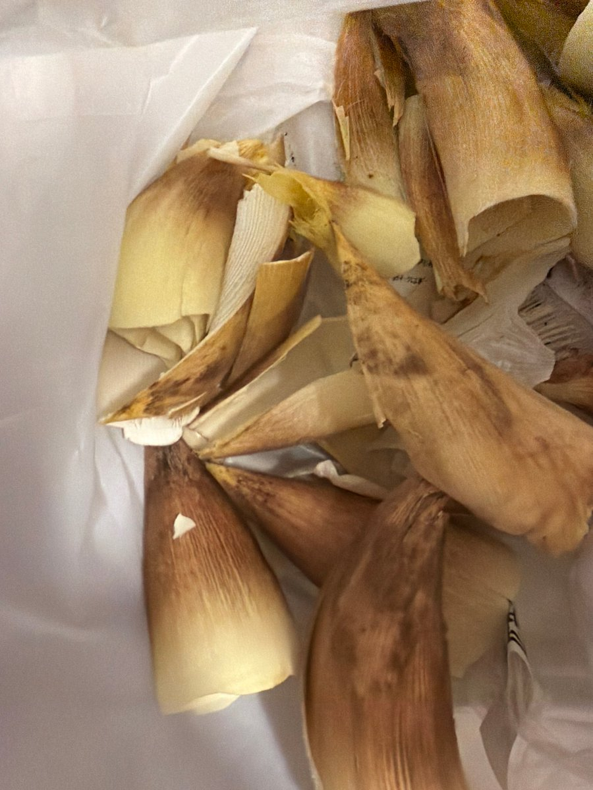

拱北靠北
@psyofsouthwest
@goshenggo
亚硝酸钠倒是真的可以解氰化物中毒，不过亚硝酸钠也是剧毒

雪下的那么深~下的那么认真~
@Rainyufanf
需要dd，一个人紫砂用不了那么多，留地址有概率送 https://t.co/G1mE4tw1ZT
Archer/张狗剩🎄
@goshenggo
我刚刚中了氰化物的毒，晚上去超市买了笋，我看笋如此清纯不做作新鲜美味，于生啃了几口，但没多久就上吐下泻，ai一查：生笋中的氰苷在体内会转化为氢氰酸，这是一种剧毒物质…. 现在正虚弱地躺着发推，用生命为大家排雷…大自然的馈赠是需要开水烫过的，切记！！竹笋有毒！ 自己不是熊猫！ https://t.co/ceAHFOMEfZ